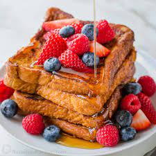

Ganja Toast

This is one of my favorite dishes and is named after my nickname Ganja
it is very rich in flavour and i havent seen people who doesnt like the pleasant taste amd almost everyone will become addicted to it ones they try it
Ingredients:
-
3 eggs
-
5 toast bread
-
50 ml milk
-
20g butter
-
50g sugar
Steps:
- start of by prepare your frying pan by letting the butter melt in the mean time with medium heat
- break 3 eggs and then stir them with 50 ml milk and 50g sugar
- then get your 5 breads and then turn them around on the egg mass
- then fry all of them at the same if they can fit obviously mine can
- then serve with milk an you are good to go